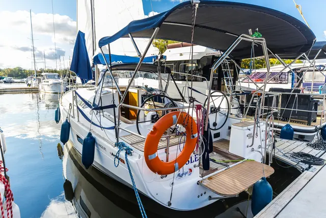
SztynortAntila 33
Jacht żaglowy
- 8-9 osób
- 3 kabiny zamyk.
- Honda 15 KM
- patent żeglarski
od 600 zł / dobaSzczegóły
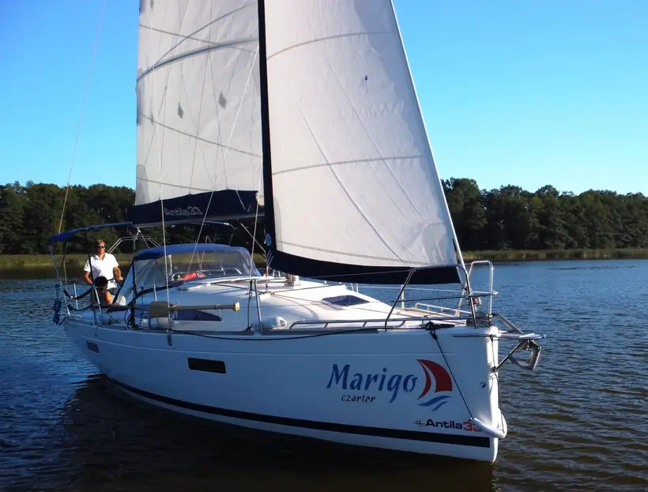
Jachty żaglowe i motorowe, w tym jednostki bez patentu. Własna flota, wydanie przy kei nr 4 w Sztynorcie i pomoc serwisu na całym szlaku.
4,8 w GoogleSztynort, keja nr 4Pon-Niedz 8:00-20:00
Nie wiesz, co wybrać? Zadzwoń, dobierzemy jacht do załogi, doświadczenia i trasy.
Wszystko z naszej oferty i cennika. Kliknij, żeby zobaczyć szczegóły.
Ceny „od” dotyczą doby poza szczytem sezonu. Stawki dla każdego terminu są na stronie jachtu i w cenniku.

SztynortJacht żaglowy
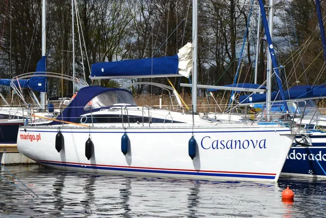
Sztynort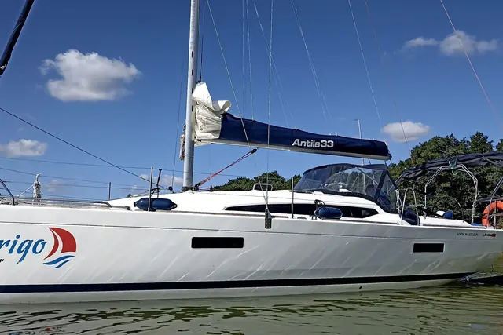
SztynortJacht żaglowy
Jacht żaglowy
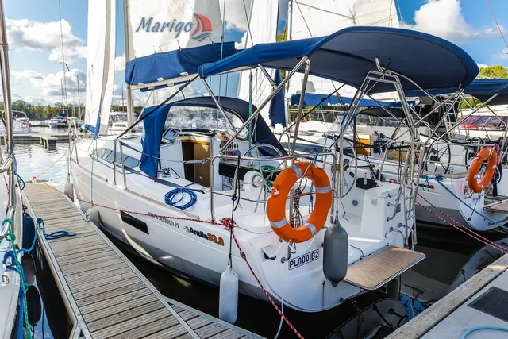
Sztynort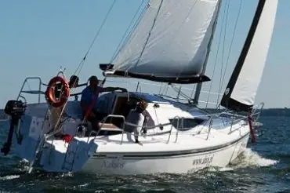
Neptun Giżycko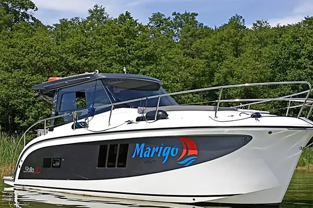
SztynortJacht motorowy
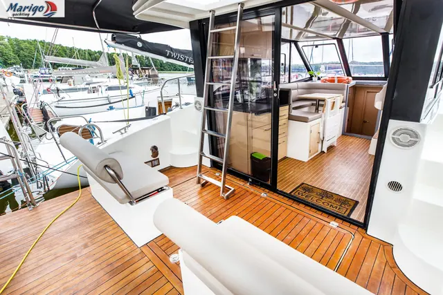
SztynortJacht motorowy
Jacht motorowy
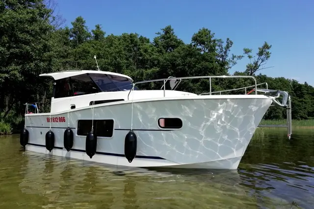
SztynortJacht motorowy
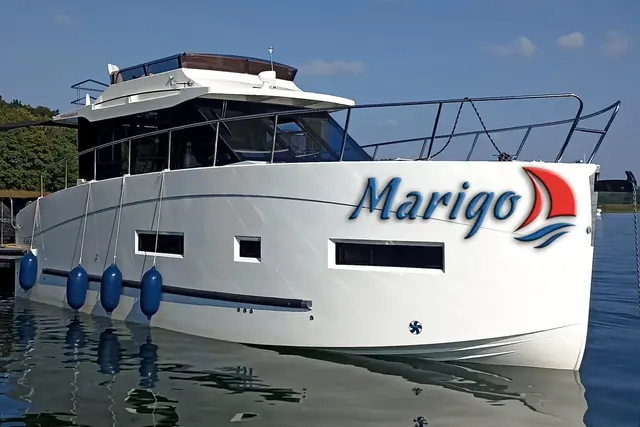
SztynortJacht motorowy
Żaden jacht nie pasuje do tych filtrów. Zmień liczbę osób albo zadzwoń: 691 612 066, pomożemy dobrać jednostkę.
* Futura 36, Futura 40 i Nautika 1000 bez patentu tylko po przedstawieniu referencji z wcześniejszego czarteru jachtem z silnikiem; w innym wypadku wymagany patent żeglarski lub motorowodny.
„Najwygodniejszy jacht, jakim pływaliśmy po Mazurach. Trzy kabiny z łazienkami to rewelacja!”
„Marigo to profesjonaliści - pełne wsparcie, czysty, dopieszczony jacht. Wracamy za rok!”
„Tango 33 to jacht stabilny i pewny, świetnie radzi sobie na wietrze 4 B, a mesy nie zalewa nawet przy ostrzejszym kursie.”
„Flybridge to bajka. Wieczory z kieliszkiem wina i widokiem na jeziora - niezapomniane.”
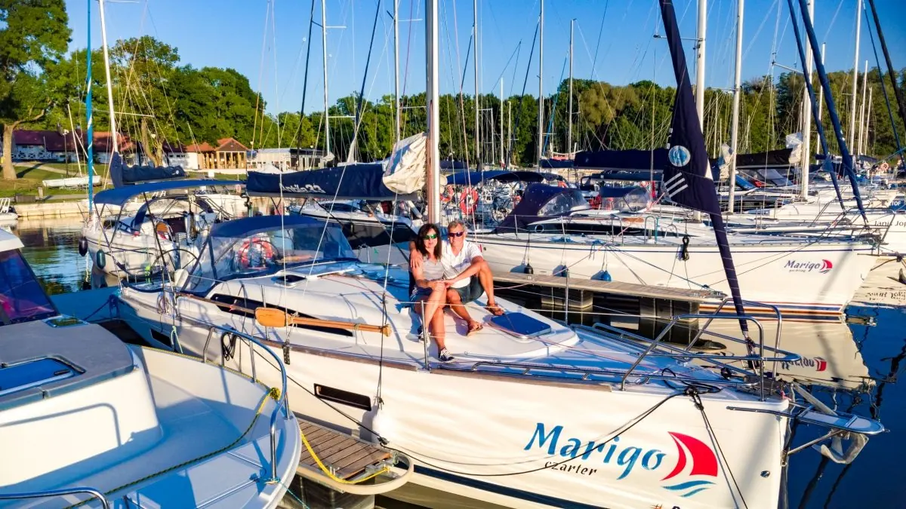
Rezerwacja w systemie online Yacht CMS jest jednoznaczna z zawarciem umowy czarterowej i akceptacją Regulaminu rezerwacji online.
Od 12.06 do 1.09 wynajmujemy tylko na pełne tygodnie: jachty żaglowe sobota-sobota, motorowe niedziela-niedziela. Poza sezonem można krócej, z dopłatą za krótki czarter: 2 doby +70%, 3 doby +30%, 4 doby +20%.
Sprzątanie i dezynfekcja 250-300 zł (obowiązkowe), pościel 70 zł za komplet, pies 200 zł, sternik 400 zł za dzień. Kaucja zwrotna 2000-5000 zł zależnie od jachtu. Pełny cennik
Startujesz z jednego z największych i najspokojniejszych portów na Mazurach, na północy Szlaku Wielkich Jezior. Nasze jachty stoją przy kei nr 4.
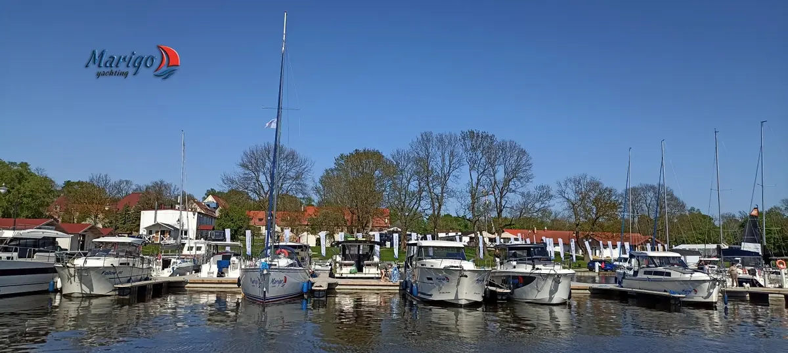
Sztynort Duży 11, 11-600 Węgorzewo. Mapa Google wczytuje się dopiero po kliknięciu, żeby strona ładowała się szybko.
Odpowiedzi na podstawie naszego regulaminu i cennika.
Jachty wydajemy w Sztynorcie w godzinach 16:00-20:00, a zdajesz je do 10:00 ostatniego dnia: sklarowane, zatankowane i wstępnie wysprzątane. Jeśli przed Twoim terminem jacht jest wolny, wydamy go wcześniej. W sezonie staramy się zdążyć na 14:00, ale nigdy kosztem przeglądu i sprzątania.
Na jachty żaglowe tak. Bez patentu można prowadzić Stillo 30, Nexus 870 Revo i Nautikę 830. Na Futurę 36, Futurę 40 i Nautikę 1000 bez patentu potrzebne są referencje z wcześniejszego czarteru jachtem z silnikiem. Przed wypłynięciem każdy dostaje szkolenie z obsługi jachtu, można też dokupić naukę prowadzenia albo sternika.
Jachty motorowe wypływają zatankowane i tak je zwracasz. Przy jachtach żaglowych przy czarterze na pełny tydzień 5 l paliwa jest w cenie. Stacja paliw Orlen jest na wodzie w porcie Sztynort.
Są poduszki, a pościel, koce lub śpiwory goście zwykle zabierają sami (polecamy prześcieradła z gumką). Komplet pościeli możemy przygotować za dopłatą.
Kaucja jest zwrotna i zależy od jachtu (2000-5000 zł). Rozliczamy ją do 5 dni roboczych od zwrotu jachtu. Możesz dodatkowo wykupić ubezpieczenie kaucji (współpracujemy z Pantaenius).
Tak, poza ścisłym sezonem (12.06-1.09). Krótki czarter ma dopłatę: 2 doby +70%, 3 doby +30%, 4 doby +20%.
Tak, za uprzednią zgodą i dopłatą 200 zł.
Przy odbiorze razem sprawdzamy jacht z protokołem zdawczo-odbiorczym, uruchamiamy urządzenia i silnik. Zachęcamy do zrobienia zdjęć ewentualnych rys. Przy zdaniu sprawdzamy jacht według tej samej listy.
Dla wszystkich naszych jachtów obowiązuje limit żeglugi do 6°B. Przy silniejszym wietrze nie wychodzimy z portu albo przerywamy żeglugę i bezpiecznie cumujemy.
Pierwszy własny jacht, Tango 780, zwodowaliśmy na jeziorze Ryńskim w kwietniu 2002 roku. Od tamtej pory przez naszą flotę przeszło 16 jachtów, głównie Tes 32 Dreamer, Twister 780, Antila 33 i jednostki motorowe. Firma PHU Marigo Mariusz Siennicki działa od 2007 roku.
O jachty dbamy sami i pracujemy 7 dni w tygodniu. Chętnie doradzimy przy pierwszym rejsie: którą trasę wybrać, ile osób zmieści się wygodnie i co zabrać.
Przewodniki po portach Szlaku Wielkich Jezior na marigo.pl. Flota Marigo startuje ze Sztynortu.
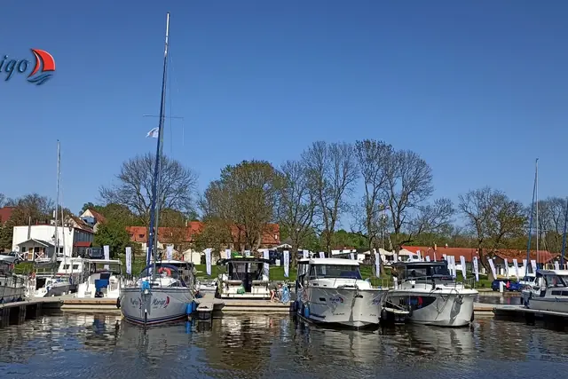
SztynortNasza baza: flota Marigo przy kei nr 4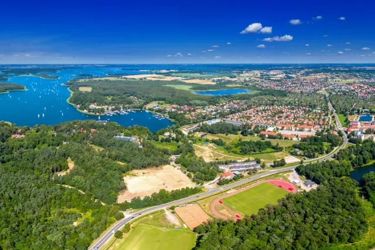
GiżyckoCzarter jachtów w Giżycku, serce mazurskiego żeglarstwa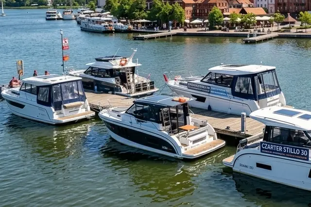
MikołajkiWynajem łodzi bez patentu w Mikołajkach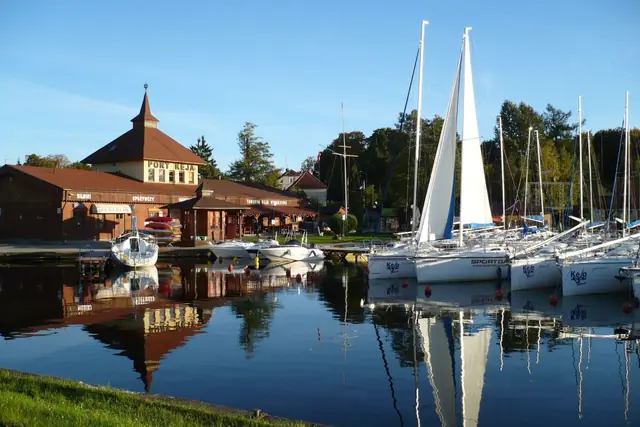
WęgorzewoPort Węgorzewo, północny kraniec szlaku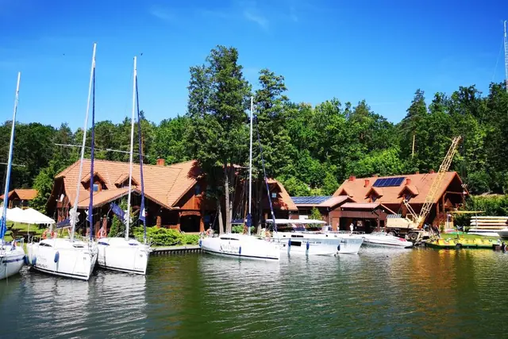
Ruciane-NidaCzarter ze spokojem i w kipiącej zieleni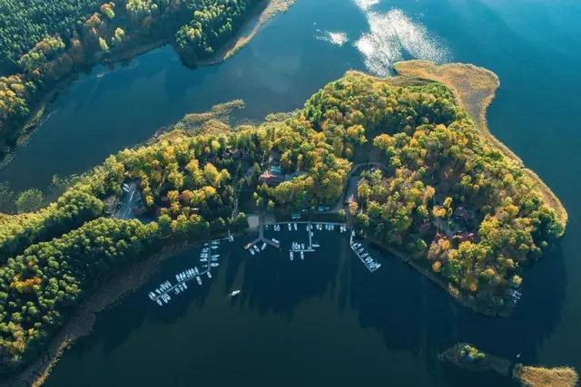
Piękna GóraPorty nad Kisajnem na start rejsuWięcej: Gdzie rozpocząć swój mazurski rejs? · Port Trygort · Giżycko Ekomarina
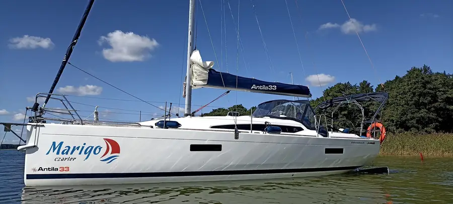
Najlepsze terminy wakacyjne znikają najwcześniej.